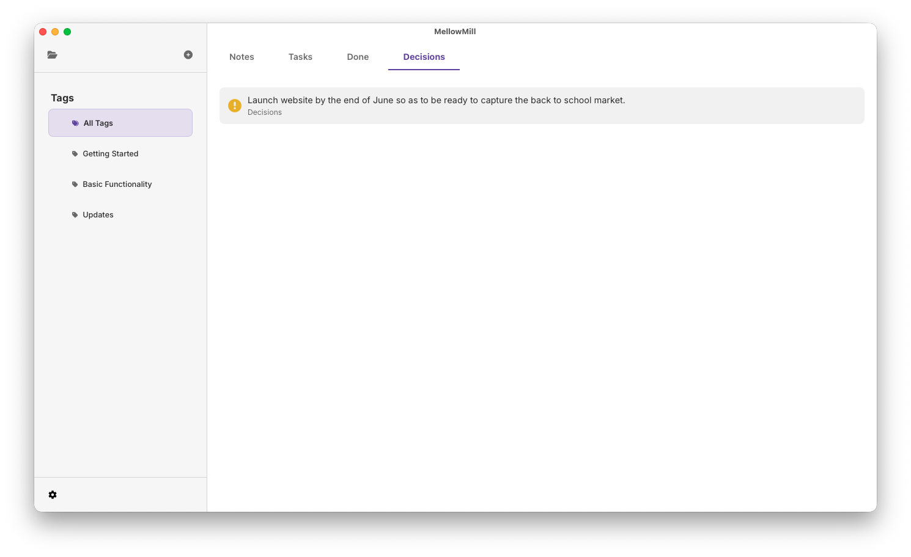

Decisions
Unlike other document formats MellowMill focuses on the semantic meaning and not the styling of the contents in a note. One of the features is recording decisions so that is easy to track and refer back to what was agreed. These are simply created by starting a line with an exclimation mark.
! Launch website by the end of June so as to be ready to capture the back to school market.
This renders as:
Launch website by the end of June so as to be ready to capture the back to school market.
Decisions are an important bit of knowledge to keep track of. They are therefore included as a filter on the home page, where they can be filterd by tag. Clicking on a decision in this list navigates you to the note where thay decision is defined.

#Basic Functionality